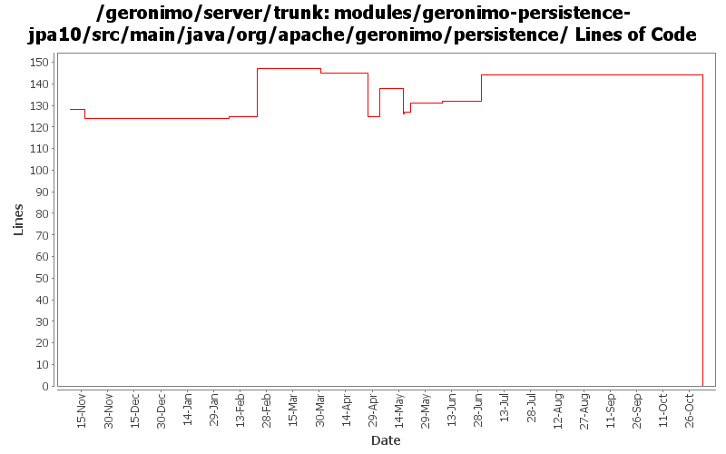

[root]/modules/geronimo-persistence-jpa10/src/main/java/org/apache/geronimo/persistence

| Author | Changes | Lines of Code | Lines per Change |
|---|---|---|---|
| Totals | 50 (100.0%) | 201 (100.0%) | 4.0 |
| djencks | 13 (26.0%) | 145 (72.1%) | 11.1 |
| kevan | 20 (40.0%) | 47 (23.4%) | 2.3 |
| akulshreshtha | 2 (4.0%) | 4 (2.0%) | 2.0 |
| dwoods | 2 (4.0%) | 2 (1.0%) | 1.0 |
| dain | 1 (2.0%) | 2 (1.0%) | 2.0 |
| gawor | 1 (2.0%) | 1 (0.5%) | 1.0 |
| prasad | 11 (22.0%) | 0 (0.0%) | 0.0 |
GERONIMO-3565. Modules distributed amongst framework/modules and plugins
0 lines of code changed in 11 files:
updating remaining references NameFactory.TRANSACTION_MANAGER -> NameFactory.JTA_RESOURCE
1 lines of code changed in 1 file:
GERONIMO-3272 eliminate the geronimo-transaction-jta11 module, we are entirely on jta11 now. Also refix logging error for non-NamedXAResource. Also make jpa stuff use spec interfaces and not drag ejb spec into the tm
51 lines of code changed in 3 files:
GERONIMO-3230 PersistenceUnitGBean doesn't work when there is a space in the path. So much for a quick copy/paste instead of applying the patch.
1 lines of code changed in 1 file:
GERONIMO-3230 PersistenceUnitGBean doesn't work when there is a space in the path.
1 lines of code changed in 1 file:
GERONIMO-3177 GERONIMO-3122 make exclude-unlisted-classes work. Also make jpa work in standalone ejb jars and wars
12 lines of code changed in 1 file:
Missed a file with 538916. TemporaryClassLoader has moved to the kernel
1 lines of code changed in 1 file:
GERONIMO-3132 GERONIMO-3165. Fix a bunch of stuff with locating persistence.xml and persistence unit jars. Hook up with openejb for extended persistence contexts
45 lines of code changed in 3 files:
GERONIMO-3131 GERONIMO-3132 GERONIMO-3133 GERONIMO-3134 Defaults for persistence units. Supply locations of jars with persistent classes to the PersistenceUnitInfo. Match a ref with not persistence unit specified to a unique match. Allow wars to have jndi references pointing to the war module, not just the ear
31 lines of code changed in 1 file:
GERONIMO-3121 Wrap Querys created outside a tx so we don't need to close the entity manager immediately
5 lines of code changed in 2 files:
GERONIMO-3053 Fix memory-related errors that can occur during multiple deploy/undeploy cycles. Not actually a memory leak, per se. We were creating way more JarFiles than we should have been. The number of JarFiles being created could have been reduced by a more effective (correct) cloning algorithm. However, rather than cloning our ClassLoader DAG, we now use a TemporaryClassLoader which reuses the existing ClassLoader DAG. TemporaryClassLoader comes from OpenEJB which got it from OpenJPA...
3 lines of code changed in 2 files:
GERONIMO-2873 Fix another persistence-related memory leak. TransformerWrapper's associated with a PersistentUnitGBean need to be removed when the GBean is stopped. Still some problems, but things look much better...
15 lines of code changed in 1 file:
GERONIMO-2873 Make sure that temporary classloader created for JPA is properly destroyed
15 lines of code changed in 1 file:
Make persistence unit deployer use better gbean names and search for persistence.xml files
1 lines of code changed in 1 file:
Fixed many, many, many bugs with the OpenEJB2 to OpenEJB3 converter
2 lines of code changed in 1 file:
GERONIMO-2607 reverted 485524
2 lines of code changed in 1 file:
GERGERONIMO-2607 Updated all GBeans to use new GBeanInfoBuilder.addOperation(..) method
2 lines of code changed in 1 file:
GERONIMO-2537 Update the src headers in server/trunk/modules to be compliant with the new ASF src header and copyright policy (http://www.apache.org/legal/src-headers.html). I also did some cleanup of the src headers and tried to make them all a consistent format
13 lines of code changed in 15 files:
GERONIMO-2460 Copy jpa support into trunk. jetty-j2ee server only so far. Daytrader w/preenhanced classes works, runtime enhancement not yet tested
0 lines of code changed in 2 files: